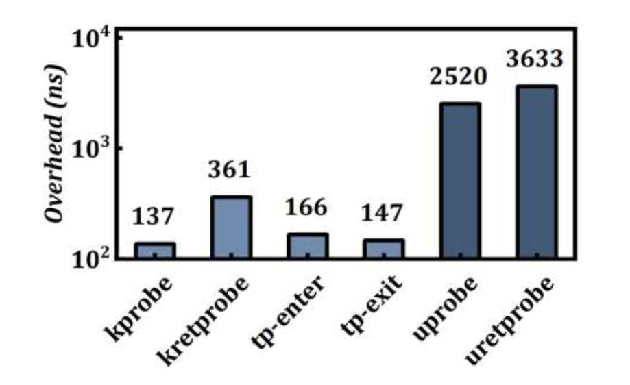
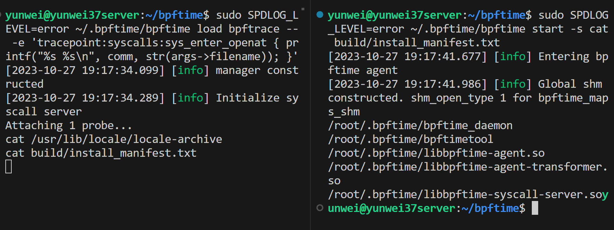
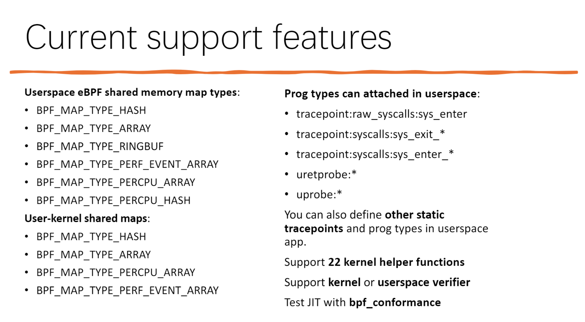
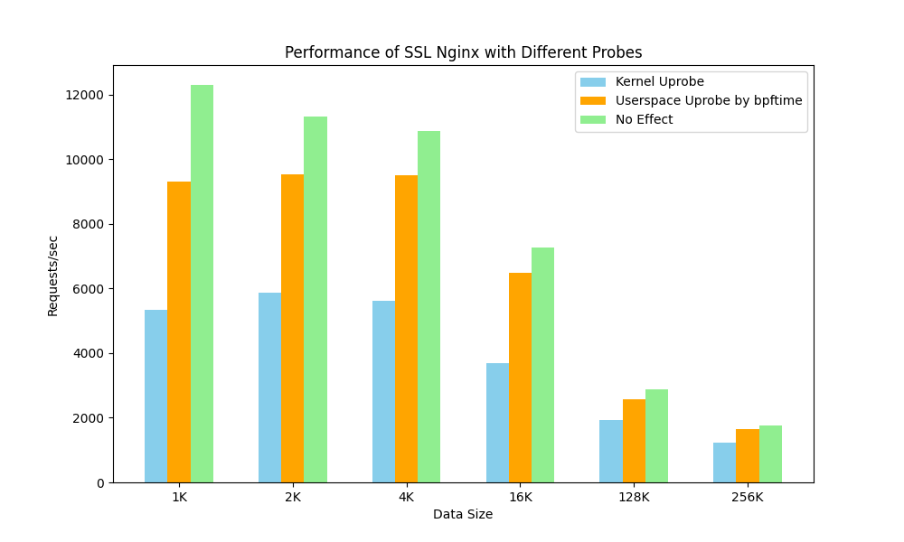
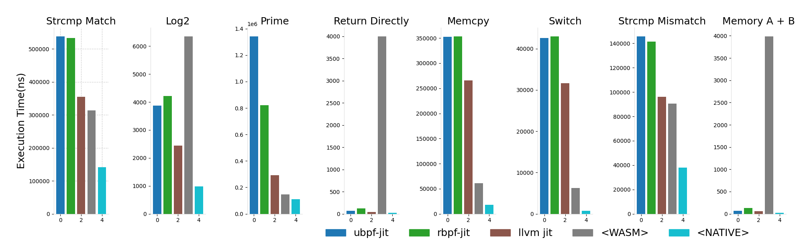

bpftime: 让 eBPF 从内核扩展到用户空间
郑昱笙，于桐
eBPF 是一项革命性的技术，起源于 Linux 内核，可以在操作系统的内核中运行沙盒程序。它被用来安全和有效地扩展内核的功能，而不需要改变内核的源代码或加载内核模块。
在这篇 Blog 中，我们希望向大家介绍一个全新的开源用户态 eBPF 运行时：https://github.com/eunomia-bpf/bpftime 。bpftime 进一步拓展了 eBPF 的能力，使现有的 eBPF 工具和应用，例如 BCC tools, bpftrace, Deepflow 等，能够不需要进行代码修改即可在非特权用户空间运行，同时使用和内核 eBPF 相同的库和工具链。
bpftime 不仅提供了 Uprobe 和系统调用追踪点等动态追踪或扩展机制，还相比内核 Uprobe 有一个数量级的性能提升，并且和内核 eBPF 一样，无需手动进行代码插桩或重启进程。bpftime 通过用户态共享内存支持进程间 eBPF maps，同时兼容内核 eBPF maps，能够实现与内核 eBPF 基础设施的无缝操作。此外，它包含了针对多种架构的高性能 LLVM JIT/AOT 编译器，以及针对 x86 的轻量级 JIT 和解释器。通过性能数据和实际案例，我们也将展示 bpftime 如何在现实世界中发挥作用，并对其未来发展进行展望，希望 bpftime 能为系统监控、分析和扩展带来前所未有的性能和灵活性。在 Linux plumbers 23 会议上，我们也介绍了 bpftime 的设计和实现[2]。
eBPF: 从内核态到用户态的系统扩展
eBPF（扩展的 Berkeley Packet Filter）从最初的网络数据包过滤工具，已经演变为一个多功能的系统级扩展技术。自从 20 世纪 90 年代 BPF 的诞生以来，eBPF 通过扩展指令集和与内核数据结构的直接互动，显著增强了其功能。2014 年加入 Linux 内核后，eBPF 成为一个强大的字节码引擎，广泛应用于性能分析、安全策略等领域。随着计算环境的复杂化，eBPF 的实时数据采集和分析能力在现代计算中发挥了重要作用，尤其是在流量控制、负载均衡和安全策略等方面。
虽然 eBPF 最初是为内核设计的，但它在用户空间的巨大潜力，以及内核对于 GPL LICENSE 的限制，也催生了例如 ubpf[3] 和 rbpf[4] 这样早期的用户空间 eBPF 运行时的产生。这种运行时使开发者能够在内核之外运行 eBPF字节码，突破了 GPL 许可的限制，同时提供了更加直观和方便的调试环境。但是，编写适用于 ubpf 和 rbpf 的程序可能需要一个特定的、和内核不完全兼容的工具链，同时只有有限的单线程哈希 maps 实现，难以运行实际的 eBPF 程序。另外，ubpf 和 rbpf 本身只是一个执行 eBPF 字节码虚拟机，在实际的使用中，依然需要编写胶水代码，和其他用户空间程序进行编译、链接后才能使用，它们本身也不提供动态追踪的功能。
在实际应用中，用户态 eBPF 已被尝试扩展和应用于网络处理、区块链和安全等领域。例如，Oko 和 DPDK eBPF 支持展示了 eBPF 在网络数据处理中的灵活性和性能优势。Solana 项目利用 eBPF 实现了 JIT 编译器，为区块链智能合约执行提供支持。eBPF for Windows 项目则是将 eBPF 功能扩展到 Linux 之外，展现了 eBPF 在跨平台兼容性方面的潜力。这些应用案例不仅展示了 eBPF 强大的系统扩展能力，也突显了它在现代计算领域的重要性和广泛适用性。更进一步的讨论可以参考我们之前的 Blog: https://eunomia.dev/blogs/userspace-ebpf/
为什么我们需要 bpftime
由于操作系统内核的核心作用以及对稳定性和安全性的高要求，操作系统内核的创新和演化相对来说较慢，这也是 eBPF 出现的初衷：在不改变内核源代码的情况下，扩展内核的功能，并进一步带来更多的创新性应用场景[5]。这也是我们希望 bpftime 能够带来的影响：在不改变用户空间程序代码的情况下，借助 eBPF 带来的安全性和生态，探索更多的发展可能性，同时弥补当前内核态 eBPF, 和用户态其他扩展方案可能的不足。
内核态实现用户态追踪（Uprobe）和系统调用追踪等的局限性
Uprobe 是一种强大的用户级动态追踪机制，它允许开发者在用户空间的程序中进行动态插桩，例如在函数的入口点、特定的代码偏移位置，以及函数的返回点。这种技术的实现是通过在指定的位置设置断点，例如在 x86 架构上使用 int3 指令，当执行流到达这一点时，程序会陷入内核，触发一个事件，随后执行预定义的探针函数，完成后返回用户态继续执行。这种动态追踪方法能够在系统范围内跟踪和插桩所有执行特定文件的进程，即允许在不修改代码、重新编译或重启进程的情况下，收集性能分析和故障诊断的关键数据。
但是，由于 eBPF 虚拟机在内核态执行，当前的 Uprobe 实现在内核中引入两次上下文切换，造成了显著的性能开销，特别是在延迟敏感的应用中这种开销会严重影响性能。如图所示，和 Kprobe 相比，Uprobe 的开销接近十倍[5]。另一方面，Uprobe 目前也仅限于追踪，无法修改用户态函数的执行流程，或者修改函数的返回值，这也限制了 Uprobe 的使用场景，无法进行代码扩展、热补丁、缺陷注入等操作。尽管如此，Uprobe 依旧因其非侵入式的用户空间功能追踪而在生产环境中被广泛采用，用于追踪诸如 SSL/TLS 和 HTTP2 等用户空间协议，监控内存分配和内存泄漏，分析垃圾回收和语言运行时，跟踪协程的创建和回收等等场景。

对于系统调用的 tracepoint，由于它们是全局可见的，因此对于特定进程的追踪而言，需要进行额外的过滤，例如针对 pid、cgroup 等在 eBPF 中进行过滤[6]，这也会对其他不需要被跟踪的进程带来一些额外的开销。
内核态 eBPF 安全性和扩展性的限制
在内核态运行的 eBPF 有其安全性和扩展性的限制。一方面，eBPF 程序需以内核模式运行，这意味着需要 root 权限，从而增加了攻击面并带来潜在的风险，例如容器逃逸。此外，eBPF 自身的漏洞也可能导致内核层面的安全漏洞。另一方面，验证器虽然对 eBPF 程序进行限制以保证安全，但这也限制了 eBPF 的功能扩展；任何想要添加的新功能或改进都需要对内核代码进行修改。这些限制不仅增加了系统的维护难度，也降低了 eBPF 的灵活性和普适性。
对于没有 eBPF 支持的内核（例如低版本系统），或非特权容器中的应用而言，用户态 eBPF 运行时也是一个可行的替代选项，可以允许在没有内核 eBPF 支持的情况下，运行 eBPF 程序进行追踪、分析、扩展等操作。
其他用户空间扩展方案的不足
目前也有一些其他的用户态追踪和扩展方案，例如 gdb 等工具可以使用 ptrace 机制，对其他进程进行追踪分析，Wasm、lua 虚拟机可以作为插件运行时使用，例如 Frida 这样的二进制插桩工具，也可以在用户态进行动态追踪。但是，这些方案都有各自的局限性。
性能开销较大：传统的工具如 gdb 利用 ptrace 机制进行进程追踪，虽然功能强大，但在其他进程进行分析和交互时会带来显著的性能开销。这种方法会频繁地暂停和恢复目标进程，导致效率降低。另外，ptrace 也限制系统中同时进行追踪的进程数量，因此无法进行大规模的分布式追踪。WebAssembly (Wasm) 沙箱作为运行时插件，虽然具有良好的灵活性和跨语言支持，但它们在执行外部库或过程时，需要进行严格的验证和运行时检查，可能引入性能损耗。相对而言，eBPF 提供了一个更为性能中心化的策略，使用静态分析和验证器确保了代码在主机上的安全执行，而不需要运行时的额外开销。对于 bpftime 而言，由于它是嵌入在被追踪进程的函数调用上下文执行 eBPF 虚拟机，不需要经过额外的上下文切换，因此性能开销更小。安全性问题：二进制插桩工具如 Frida 提供了动态追踪的能力，但这可能会引入安全性问题，因为插桩代码运行在相同的进程上下文中，可能会被恶意利用，同时追踪工具或脚本本身的代码缺陷也可能导致被追踪的程序崩溃，例如访问了错误的地址或者指针等。相比之下，eBPF 可以通过验证器确保代码的安全性。可见性不足：另外，对于其他的用户态的追踪方案而言，这些工具通常只能提供对单个进程的观察能力，无法提供系统范围内的洞察，难以捕获内核态事件或跨进程通信的全局视图，限制了其在复杂系统中的分析能力。这也就是 eBPF 和其它方案主要在内核态中进行追踪的原因，可以关联分析内核态和用户态的事件，例如将七层的网络数据包和内核态的网络事件进行关联，或者将用户态的函数调用行为和内核态的系统调用进行关联，从而提供更加全面的分析能力。对于 bpftime 而言，它可以不仅仅是一个用户态的虚拟机方案，用户态的 eBPF 可以和内核态中的 eBPF 基础设施协同工作，来实现跨越边界的分析和扩展能力。
对于现存的其他用户态的 eBPF 运行时，如前所述，它们没有动态追踪或动态扩展的能力，需要手动集成，也无法直接利用现有的 eBPF 工具链和应用，这很大程度上限制了它们的使用场景。另一方面，它们也没办法直接和内核态的 eBPF 协同工作，只能提供用户态的有限扩展能力。
bpftime：用户态 eBPF 运行时
和现有的 eBPF 工具和框架兼容的用户态 eBPF 运行时
bpftime 希望能保持和现有的内核 eBPF 的良好兼容性，作为内核 eBPF 的一种用户态替代和改进方案，并且希望能最大程度上利用现有 eBPF 丰富的生态和工具。例如，bpftime 允许直接使用未经修改的 bpftrace 工具，在用户态执行 eBPF 脚本，追踪系统调用或用户态函数：

同时，也可以在用户态运行 bashreadline，funclatency，gethostlatency，mountsnoop，opensnoop，sigsnoop，statsnoop，syscount 等 BCC/libbpf-tools 工具[7]。bpftime 在用户态的共享内存之中构建了 eBPF maps 的数据结构实现，可以同时分析统计多个进程，也可以支持通过 ring buffer、perf buffer 等方式，将数据上报给追踪工具。
bpftime 也在用户态提供了和内核兼容的 eBPF 基础设施，可以在完全不需要内核 eBPF 的情况下运行，并且支持一部分内核的 eBPF maps，helpers，动态追踪机制和几乎所有的 eBPF 指令集：

从安全性角度出发，bpftime 也提供了 eBPF 验证器，用于验证 eBPF 字节码的安全性，防止恶意代码的注入或者破坏被追踪的进程。bpftime 可以使用内核态的 eBPF 验证器，也可以使用另一个独立的用户态 eBPF 验证器，作为无法访问内核 eBPF 的替代方案。
高性能的 Uprobe 和系统调用追踪
bpftime 支持 Uprobe 和系统调用追踪，通过二进制重写的方式，将 eBPF 程序嵌入到被追踪进程的函数调用上下文中，从而实现动态追踪和扩展。这种方法不仅避免了内核态和用户态之间的上下文切换，还能够在不修改代码、重新编译或重启进程的情况下，收集性能分析和故障诊断的关键数据。和内核态的 Uprobe 相比，bpftime 的 Uprobe 实现性能更高，同时也提供了更多的功能，例如可以修改函数的返回值，或者修改函数的执行流程，从而实现代码扩展、热补丁、缺陷注入等操作。在用户态实现的 Uprobe，性能可以比内核态的 Uprobe 高一个数量级：
| Probe/Tracepoint Types | Kernel (ns) | Userspace (ns) |
|---|---|---|
| Uprobe | 3224.172760 | 314.569110 |
| Uretprobe | 3996.799580 | 381.270270 |
| Syscall Trace | 151.82801 | 232.57691 |
借助 ptrace 实现的动态库注入，和 LD_PRELOAD 等技术，bpftime 的 eBPF 运行时支持在程序启动运行的时候进行追踪，也支持将 eBPF 探针直接挂载到多个正在执行的进程。我们也进行了一个测试，通过 bpftime 加载一个监控 libc 中 malloc 函数的 eBPF 探针，并测量了加载延迟。结果显示，bpftime 在加载过程中会使正在运行的进程暂停约 48 毫秒。作为比较，我们使用了 LD_PRELOAD 方法在进程开始前加载同样的扩展，并观察到其加载延迟为 30 毫秒。
我们使用 sslsniff 工具[8]，在 bpftime 的用户态 Uprobe 中对于 Nginx 的 SSL 加密流量进行了追踪分析，并且和基于内核 Uprobe 的方式进行了对比，也可以观察到明显的性能提升：

对于现代的 eBPF 可观测性工具而言，可能需要对于同一个事件，在内核和用户态函数同时进行采集分析。例如，对于一个 HTTP 请求，可能需要同时分析内核态的网络事件，以及用户态的函数调用，从而得到一个完整的请求链路。bpftime 的 Uprobe 实现可以和内核态的 eBPF kprobe 协同工作，从而实现这种跨越边界的分析能力。对于其他的动态追踪机制的实现和改进，也在我们的计划之中。
新的 eBPF JIT 编译器和 AOT 编译器
bpftime 包含了一个新的基于 LLVM 的 eBPF JIT 编译器，可以在运行时将 eBPF 字节码编译为本地机器码，从而提高 eBPF 程序的执行效率。和 ubpf 和 rbpf 等其他用户态 eBPF 运行时的 JIT 编译器，以及和 Wasm 相比，LLVM JIT 编译器可以提供更好的性能，接近 native 代码的执行效率，同时也提供了更好的跨平台支持，例如支持 RISC-V 等架构。我们进行了一个简单的性能对比和分析[9]:

除了 JIT 之外，bpftime 也包含了一个 AOT 编译器，可以预先将 eBPF 字节码验证过后编译为特定架构上的机器码文件，以便在嵌入式上进行部署和使用，可以大大减少编译启动的时间。
更多的探索性用例和未来发展
除了扩展先前的 Uprobe 和系统调用追踪点，bpftime 还可以用于其他的探索性用例，例如：
错误注入：借助和内核兼容的 bpf_override_return() helper[10]，bpftime 可以允许在特定 eBPF 程序类型中，修改进程的 Syscall 返回值，阻止特定的 Syscall，或者修改和替换特定的函数调用，从而实现错误注入的功能。内核的 Uprobe 本身并不支持这种功能，同时内核的bpf_override_return也由于安全原因，需要编译时启用 CONFIG_BPF_KPROBE_OVERRIDE 选项才能开启，主流的 Linux 发行版默认不开启这个选项。热补丁：如上所述，借助 bpf_override_return 的 helper 机制，userspace eBPF 也可以替换、过滤某些函数调用，从而实现热补丁的功能。基于 eBPF 的 Nginx Module：bpftime 可以作为一个 Nginx Module，通过 eBPF 实现 Nginx 的扩展，例如在 Nginx 中实现动态路由、负载均衡、缓存、安全策略等功能。增强 Fuse：已经有一些使用内核中的 eBPF 来优化 Fuse 尝试，bpftime 也可能可以作为用户态文件系统的一部分，通过 eBPF 在对对应的用户态进程中修改系统调用等的行为，实现对文件系统的扩展，例如在用户态文件系统中实现动态路由、缓存、安全策略等功能。
bpftime 目前还是一个较为早期的探索性项目，我们也在积极探索更多其他可能的应用场景，例如在用户态实现 eBPF 的网络数据包过滤，优化服务网格的数据包转发性能，绕过内核的网络协议栈等等，非常期待大家提出更多的想法和建议，或者和我们一起实现这些功能。之后，我们也希望 bpftime 能提供对内核更好的兼容性支持，借助 LLVM 的 JIT 编译器，可能也可以为内核的 eBPF 提供更好的性能优化指导、更方便的测试和调试环境。
总结
bpftime 在用户空间为 eBPF 应用打开了新的可能性，也为扩展用户态应用提供了一些新的选择。它允许现有 eBPF 应用程序使用相同的库和工具链在非特权用户空间运行，并为用户空间 eBPF 提供了 Uprobe 和 Syscall 等跟踪机制，与内核 Uprobe 相比，性能有了显著提高，而且无需手动检测代码或重启进程。运行时支持用户空间共享内存中的进程间 eBPF 映射，也兼容内核 eBPF 映射，允许与内核 eBPF 基础架构无缝运行。
bpftime 目前已经在 GitHub 上开源，欢迎大家试用和提出反馈： https://github.com/eunomia-bpf/bpftime 如果有任何建议或者问题，欢迎在 GitHub 上提出 issue 或者发送邮件到 yunwei356@gmail.com 联系我们。
参考资料
- bpftime Git repo: https://github.com/eunomia-bpf/bpftime
- bpftime Linux Plumbers talk: https://lpc.events/event/17/contributions/1639/
- ubpf: https://github.com/iovisor/ubpf
- rbpf: https://github.com/qmonnet/rbpf
- uprobe 和 kprobe 的性能对比参考： https://dl.acm.org/doi/10.1145/3603269.3604823
- Capturing Opening Files and Filter with Global Variables: https://eunomia.dev/tutorials/4-opensnoop/
- examples: https://github.com/eunomia-bpf/bpftime/tree/master/example
- sslsniff，根据 bcc 中的同名工具编写： https://github.com/eunomia-bpf/bpftime/tree/master/example/sslsniff
- bpf benchmark: https://github.com/eunomia-bpf/bpf-benchmark
- BPF-based error injection for the kernel https://lwn.net/Articles/740146/
- FUSE BPF: A Stacked Filesystem Extension for FUSE https://lwn.net/Articles/915717/